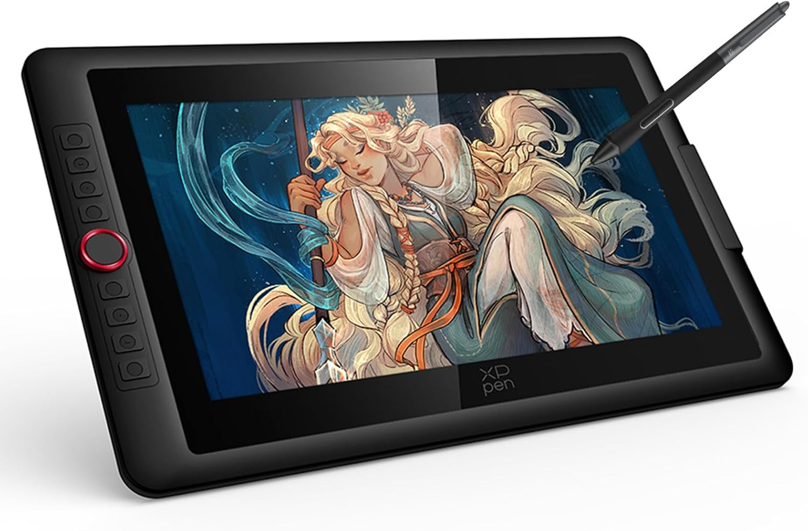
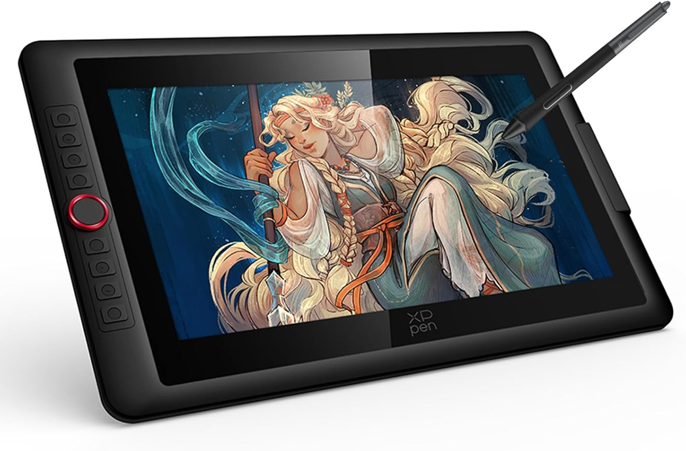
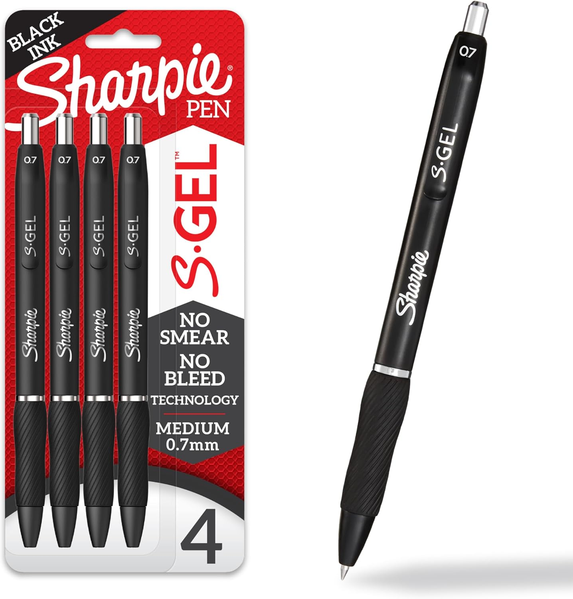
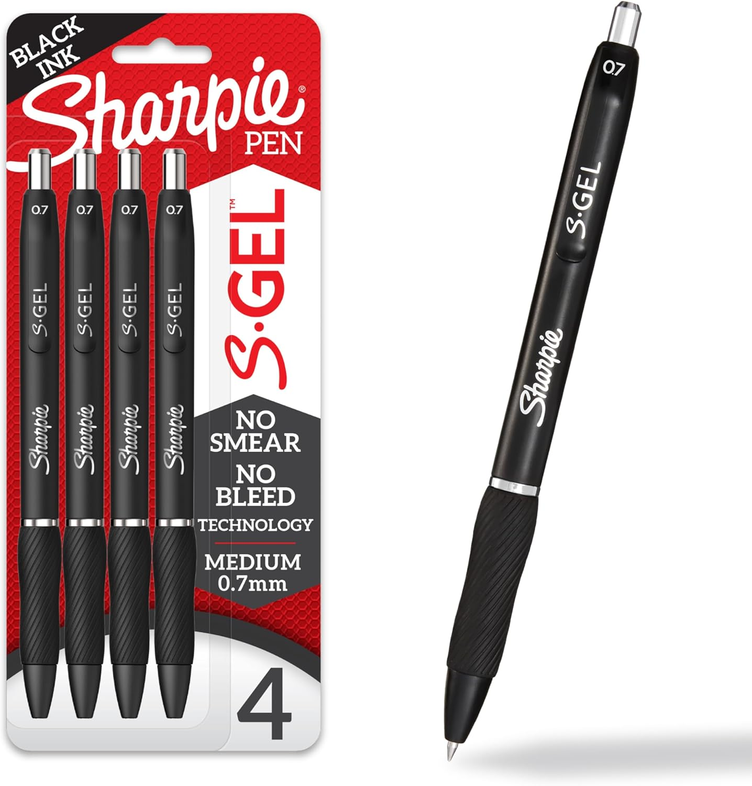

Digital
For digital art, I use Clip Studio Paint for my program and a XP-Pen Artist 15.6 Pro Drawing Tablet.

For digital art, I use Clip Studio Paint for my program and a XP-Pen Artist 15.6 Pro Drawing Tablet.

I only really use my sketch book for, you know, sketching, but I like to sketch in pen. I think it makes my sketches clearer.
 
